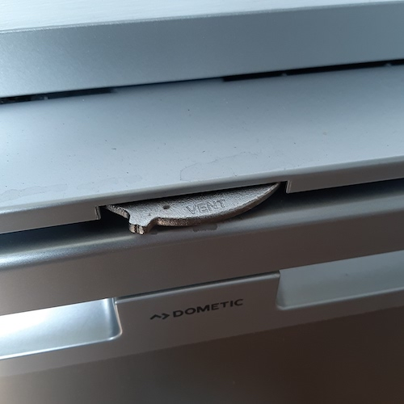

Food and Drink
Preparing and enjoying meals
Food Storage
-
BottlesWe suggest wine and beers under the cab passenger seats or rear passenger seats if not using child seats

{kind=link}
{kind=link}
{kind=link}
Fridge
-
Vent Control Ensure that the vent control is set to closed when the fridge is on. This is opened when we are not using the fridge.
-
ClosingPush the door close after checking that all the shelves are closed
{kind=link}
{kind=link}
{kind=link}
Taps
-
Pre-checksEnsure the tap is off, the sink cover is off and the tap points to the sink. Also that the waste tank is connected up.
-
Using the tapThe lever for the tap is just on and off, it doesn’t change the water temperature
-
Empty TankIf the pump just makes noise and no water comes through the tank needs refilling
{kind=link}
{kind=link}
Water Tanks
-
IdentificationThere are two tanks one marked for 'Water' and one for 'Waste'. Only use the 'Water' tank for clean water and the 'Waste' for the used water
-
LocationIn the cupboard beneath the hob
-
Filling UpTo fill up do the following When filling up also empty the waste tank so there is no chance of it overflowing
- To fill up Loosen the yellow clip holding the tanks in place
- Remove the pump and waste hoses from the top of the tanks
- Take the tanks out of the cupboard and go empty and fill at a suitable location
- Only fill up the water tank about 2/3rd so that it does not overflow when driving and while putting
- the water tanks back in place
- Put the tanks back into their locations
- Ensure the two hoses are back in the correct locations
- Reattach the yellow clips
- We also stuff a plastic bag around the top of the fresh water tank to avoid it spilling while driving


Hot Water
{kind=link}
{kind=link}
Preparing Food
{kind=link}
{kind=link}
Cooking on the Hob
-
UtensilsThere are cooking utensils in the right most cupboard above the kitchen
-
Enabling the GasTo use the hob the gas needs to be turned on
- The gas cylinder is located in the left hand side of the boot
- There is a key to unlock the gas safety box on the van keychain
- Unlock the gas safety box, open the door and turn the valve clockwise to open.
- Once finished close and lock the gas safety box


-
Using the Hob
- With the gas turned on hold down and turn one of the hob knobs and ignite the gas with the lighter provided
- The hob is powerful so you will want to start with the minimum setting to avoid burning anything
- The cork heat mats are under the sink to be used for any hot pans on the worktop or tables

-
VentilationIt is a good idea to open one of the bed vent windows and then set ceiling fan above the table to extract mode. This will draw air up and out the roof and help avoid the van smelling like your dinner all night
Washing Up
-
Campsite FacilitiesWe advise using campsite facilities to do your main meal washing up as there is more space
-
SinkBut there is are tea towels washing liquid and kitchen spray in the kitchen cupboard to wash up in the sink